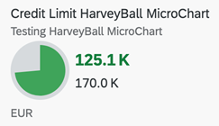

A single measure value is shown against a maximum value. For more information about this chart type, see Samples.
UI.Chart
AnnotationThe UI.Chart Title property is used for the title.
The UI.Chart Description property is used for
the subtitle.
XML Annotation
<Annotation Term="UI.Chart" Qualifier="SpecificationWidthHarveyChart">
<Record>
<PropertyValue EnumMember="UI.ChartType/Pie" Property="ChartType" />
<PropertyValue Property="Title" String="Sold to Produced Harvey Chart" />
<PropertyValue Property="Description" String="Harvey Chart" />
<PropertyValue Property="Measures">
<Collection>
<PropertyPath>Sold</PropertyPath>
</Collection>
</PropertyValue>
<PropertyValue Property="MeasureAttributes">
<Collection>
<Record Type="UI.ChartMeasureAttributeType">
<PropertyValue Property="DataPoint" AnnotationPath="@UI.DataPoint" />
</Record>
</Collection>
</PropertyValue>
</Record>
</Annotation>ABAP CDS Annotation
@UI.Chart: [
{
title: 'Sold to Produced Harvey Chart',
description: 'Harvey Chart',
chartType: #PIE,
measures: [
'Sold'
],
measureAttributes: [
{
measure: 'Sold',
role: #AXIS_1,
asDataPoint: true
}
],
qualifier: 'SpecificationWidthHarveyChart'
}
]
annotate view STTA_C_MP_PRODUCT with {
}
CAP CDS Annotation
UI.Chart #SpecificationWidthHarveyChart : {
ChartType : #Pie,
Title : 'Sold to Produced Harvey Chart',
Description : 'Harvey Chart',
Measures : [
Sold
],
MeasureAttributes : [
{
$Type : 'UI.ChartMeasureAttributeType',
DataPoint : '@UI.DataPoint'
}
]
}
UI.DataPoint
AnnotationXML Annotation
<Annotation Term="UI.DataPoint">
<Record>
<PropertyValue Path="Sold" Property="Value" />
<PropertyValue Path="Produced" Property="MaximumValue" />
<PropertyValue Path="criticalityValue" Property="Criticality" />
</Record>
</Annotation>
ABAP CDS Annotation
@UI.dataPoint: {
criticality: 'criticalityValue',
maximumValue: 20
}
Sold;CAP CDS Annotation
UI.DataPoint : {
Value : Sold,
MaximumValue : Produced,
Criticality : criticalityValue
}For semanting coloring, only the Criticality
annotation
is supported.
The following annotations are mandatory and must be used in the harvey micro chart:
UI.Chart → ChartType:
"Pie"
UI.Chart → Measures
UI.Chart → MeasureAttributes → DataPoint
UI.DataPoint→ MaximumValue
In case semantic coloring is required, use UI.DataPoint → Criticality